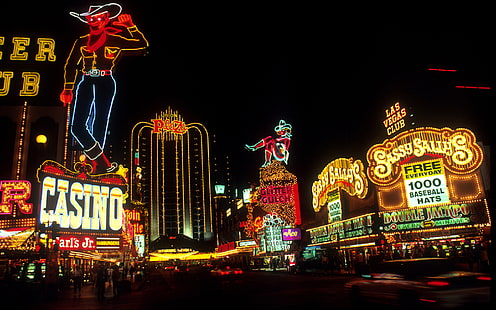

Economy
The primary drivers of the Las Vegas economy are tourism, gaming, and conventions, which in turn feed the retail and restaurant industries.
The Welcome to Fabulous Las Vegas sign, welcoming tourists to the city
Tourism
World Market Center Building A
The Golden Nugget Las Vegas.
The Las Vegas Strip, primarily located in Paradise
A view of the Las Vegas Valley looking north from the Stratosphere Tower
The major attractions in Las Vegas are the casinos and the hotels, although in recent years other new attractions have begun to emerge.
Most casinos in the downtown area are located on Fremont Street, with The STRAT Hotel, Casino & Skypod as one of the few exceptions. Fremont East, adjacent to the Fremont Street Experience, was granted variances to allow bars to be closer together, similar to the Gaslamp Quarter of San Diego, the goal being to attract a different demographic than the Strip attracts.
Downtown casinos
Main article: Downtown (Nevada gaming area)
The Golden Gate Hotel and Casino, located downtown along the Fremont Street Experience, is the oldest continuously operating hotel and casino in Las Vegas; it opened in 1906 as the Hotel Nevada.
The year 1931 marked the opening of the Northern Club (now the La Bayou).The most notable of the early casinos may have been Binion's Horseshoe (now Binion's Gambling Hall and Hotel) while it was run by Benny Binion.
Boyd Gaming has a major presence downtown operating the California Hotel & Casino, the Fremont Hotel & Casino, and the Main Street Casino. The Four Queens also operates downtown along the Fremont Street Experience.
Downtown casinos that have undergone major renovations and revitalization in recent years include the Golden Nugget Las Vegas, The D Las Vegas (formerly Fitzgerald's), the Downtown Grand Las Vegas (formerly Lady Luck), the El Cortez Hotel & Casino, and the Plaza Hotel & Casino.[57]
Las Vegas Striph4
Main article: Las Vegas Strip
The center of the gambling and entertainment industry is located on the Las Vegas Strip, outside the city limits in the surrounding unincorporated communities of Paradise and Winchester in Clark County. The largest and most notable casinos and buildings are located there.[58]
 
Climate of Las Vegas
Las Vegas is hot and dry for most of the year. The average daily temperature is 68 °F (20 °C); the average high is 80 °F (27 °C) and the average low is 56 °F (13 °C). January is the coldest month, with average daily temperatures ranging from 57 °F (14 °C) to 37 °F (3 °C); freezing temperatures are uncommon in the valley but normal for the surrounding foothills. July is the hottest month,
with average daily highs and lows of 104 °F (40° C) and 78 °F (26 °C).
Impact of growth on water supply
A growing population means the Las Vegas Valley used 1.2 billion US gallons (4.5×109 l) more water in 2014 than in 2011. Although water conservation efforts
implemented in the wake of a 2002 drought have had some success, local water consumption remains 30 percent more than in Los Angeles, and over three times
that of San Francisco metropolitan area residents. The Southern Nevada Water Authority is building a $1.4 billion tunnel and pumping station to bring water
from Lake Mead, has purchased water rights throughout Nevada, and has planned a controversial $3.2 billion pipeline across half the state. By law, the
Las Vegas Water Service District "may deny any request for a water commitment or request for a water connection if the District has an inadequate supply of water."
However, limiting growth on the basis of an inadequate water supply has been unpopular with the casino and building industries.